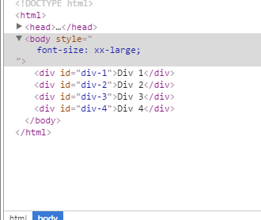
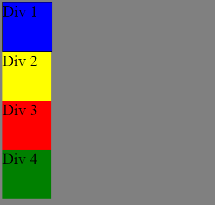
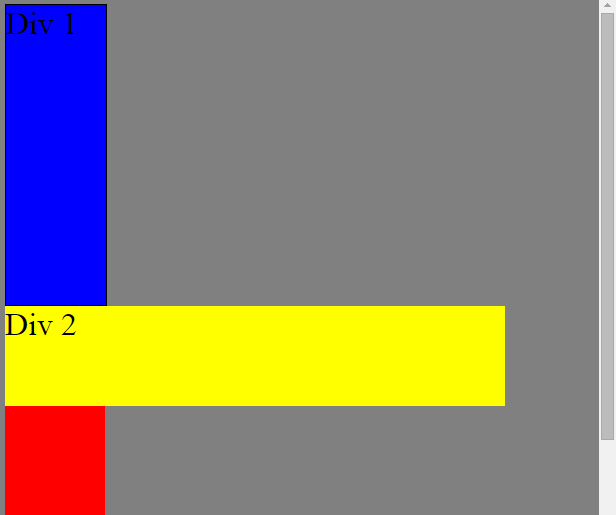
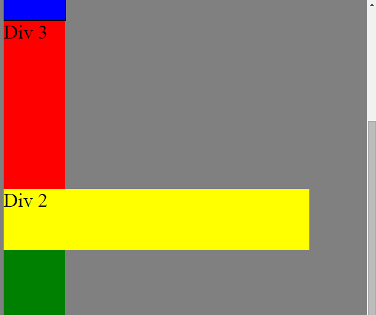
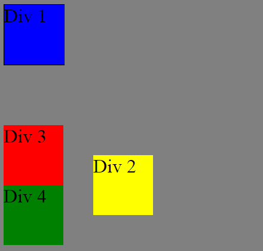
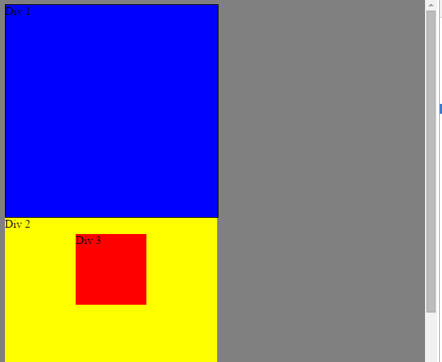
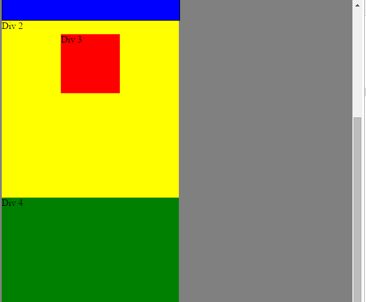

Week 3 10/18/2015
What are the differences between relative, absolute, fixed, and static positioning?
There are four types of positioning: static, fixed, relative, and absolute. In this week's entry, I want to clarify the differences between these four types of position.
The most basic position is static. All html elements are in static position by default. An element in static position is posiitoned according to the flow of the page. In the screenshots below, four boxes labeled Div 1, Div 2, Div 3, and Div 4 are stacked on top of each other in the order that they appear in the html code. Div 1 was defined first so it is placed first, then Div 2, followed by 3, and then Div 4. In static position, the properties top/bottom, left/right have no effect on the position.
- 
- 
Next, we look at fixed position. We set Div 2 to fixed position and leave the other three in static position. I've lengthed the other three to cause scrolling off the screen. The effect of fixed position is take take Div 2 out of the html hierarchy and place it on top of the other three elements - note how Div 3 is covered by Div 2 in the left screenshot, and then after scrolling to the bottom (see the right screenshot), Div2 has not not moved and is now covering Div 4. Fixed position is good for elements that you don't want to scroll offcreen. You can use the properties top/bottom, left/right to adjust the placement of an element in fixed position.
- 
- 
Now, we consider relative position. An element in relative position is positioned relative to its static position (several websites call static position, normal position). Let's consider an example. In the left screenshot, all Divs are in static/normal position. In the right screenshot, Div 2 is in relative position with properties left = 150px and top = 150px. The effect is to move Div 2 so that the original static Div 2 is 150px to the left of, and 150px above the relative Div 2. You can use negative numbers to move in the opposite direction (or to add to the confusion, you can also use positive numbers with the properties right and bottom, respectively). If you do not specify top/bottom or left/right then the element stays in static position.
- 
Finally, we consider absolute position. Absolute position is similar to fixed position. Only, an element is in absolute position if it is in fixed posiiton relative to it's parent/containing element. It is best to see an example. In the screen shot on the left, Div 3 is contained in Div 2. In the screenshot on the right, note that sfter scrolling, Div 3 is in the same position inside of Div 2 but has moved upwards along with Div 1, Div 2, and Div 4.
- 
- 
This is, at best, an incomplete overview of position. As an exercise, try to use position to force a footer to stay at the bottom of a page.